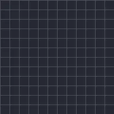

Tekstvoortgang

Toont de tekst tussen Begin en Einde, per teken, woord of regel, met optioneel infaden, schuiven, schalen of vervagen.
Tekstvoortgang laat een tekstlaag beetje bij beetje verschijnen. Animeer Einde van 0 % naar 100 % en de tekst verschijnt volgens Op basis van: per teken, woord of regel, in de Richting die je kiest. Verschijnen als bepaalt hoe elk stukje binnenkomt: ploppen, infaden, schuiven, groeien, krimpen of vervagen. De kant-en-klare voorinstellingen Typemachine, Per woord infaden, Per letter omhoog en Inploppen hebben de keyframes al klaarstaan.
Instellingen
| Instelling | Type | Bereik | Standaard |
|---|---|---|---|
| Begin | Getal | 0% tot 100% | 0% |
| Einde | Getal | 0% tot 100% | 100% |
| Op basis van | Keuze | Teken, Woord, Regel | Teken |
| Richting | Keuze | Vanaf begin, Vanaf einde, Vanuit midden, Willekeurig | Vanaf begin |
| Verschijnen als | Keuze | Ploppen, Infaden, Omhoog schuiven, Omlaag schuiven, Naar links schuiven, Naar rechts schuiven, Groeien, Krimpen, Vervaging | Infaden |
| Zachtheid | Getal | 0 tot 50 | 0 |
| Afstand | Getal | 0 tot 1000 | 40 |
| Seed | Getal | 0 tot 1000 | 1 |
| Stijl | Keuze | Klassiek, Standaard | Klassiek |
Voorinstellingen
Kies er een op de detailpagina van het effect in de Effectenbibliotheek. Elke voorinstelling is een kant-en-klare instelling die je daarna nog kunt aanpassen.
 Typemachine
Typemachine- Per woord infaden
- Per letter omhoog
 Inploppen
Inploppen